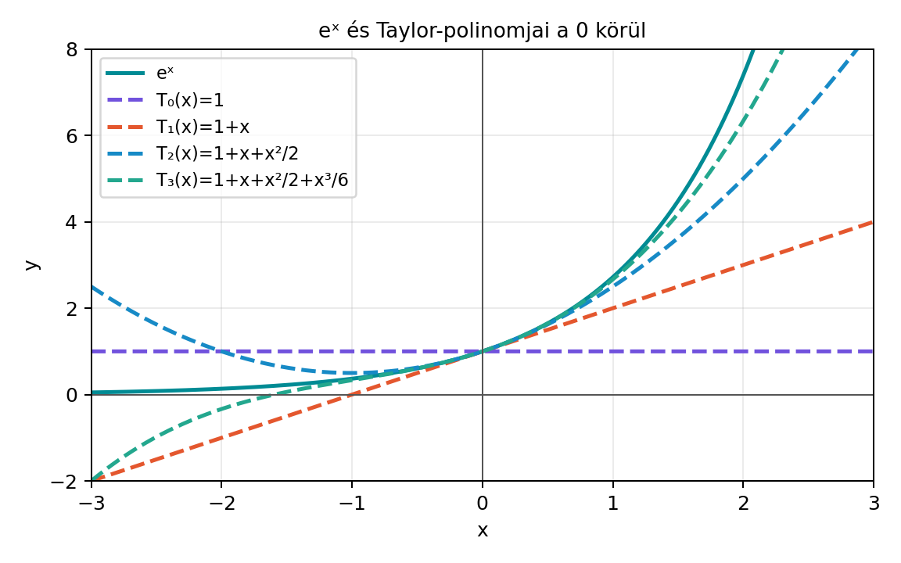

Amikor egy zsebszámológép kiszámolja az
,
vagy
értékét, nyilvánvalóan nem tárolhat minden lehetséges bemenethez egy-egy
pontos értéket. A gép apró áramkörei összeadást, szorzást és osztást
tudnak gyorsan végezni; a függvényértékeket valamilyen polinom
segítségével közelítik. A Taylor-sor pontosan erre ad általános
módszert: a bonyolult függvényt „jó” polinomokkal közelítjük, és meg is
tudjuk mondani, mekkora a hiba. Ebben az alfejezetben a legfontosabb
elemi függvények Taylor-sorát vizsgáljuk meg, és azt a kérdést járjuk
körül: mikor állítja elő a Taylor-sor magát a függvényt?
13.3.2 Szemléletes kép
Az alábbi ábrán az
függvény és a
,
,
,
illetve
fokú,
körüli Taylor-polinomjai láthatók.

eˣ és Taylor-polinomjai a 0 körül - Az eˣ
függvény (folytonos kék) és a 0., 1., 2., 3. fokú Taylor-polinomok
(szaggatott vonalak). A magasabb fokú polinom egyre nagyobb
intervallumon tapad a görbére.
Az ábra jól mutatja a Taylor-polinomok alapvető tulajdonságát: a
közelítő polinom fokszámának növelésével a görbe egyre jobban simul az
eredeti függvényhez a középpont közelében. A kérdés az, hogy a fokszámot
minden határon túl növelve a keletkező végtelen sor visszaadja-e a
függvényt.
13.3.3 A Taylor-sor és a
maradéktag
A A Taylor-formula maradéktaggal alfejezetben
láttuk, hogy ha
-szer
folytonosan differenciálható az
pont környezetében, akkor
ahol
az
-edik
Taylor-polinom,
pedig a maradéktag. A Taylor-polinom természetes „határértéke” az
esetén keletkező végtelen sor.
Definíció. Ha
akárhányszor differenciálható az
pont egy környezetében, akkor az
sort az
függvény
középpontú Taylor-sorának nevezzük. A sor
-edik
részletösszege éppen a
Taylor-polinom.
A Taylor-sor tehát egy speciális hatványsor. Az általános
hatványsorok elméletét a Hatványsorok és a
konvergenciasugár alfejezetben vizsgáljuk; itt a konkrét
függvényekre koncentrálunk.
Tétel. Ha egy
pontban a Taylor-formula
maradéktagjára
,
akkor a Taylor-sor ebben a pontban konvergens, és összege
.
Bizonyítás. A Taylor-formula szerint
.
Ha
,
akkor
Mivel a Taylor-sor
-edik
részletösszege
,
ezért a sor konvergens, és összege
.
∎
A maradékra a leggyakrabban az
-edik
deriváltat tartalmazó Lagrange-alakot használjuk:
ahol
az
és
közé esik. Ezzel becsüljük meg a hibát a következő szakaszokban.
Először egy kicsi, de rendkívül hasznos lemmát bizonyítunk.
Lemma. Tetszőleges valós
számra
Bizonyítás. Legyen
.
Ha
,
az állítás nyilvánvaló. Ha
,
válasszunk egy olyan
természetes számot, amelyre
.
Ekkor bármely
esetén
Mivel
,
az utolsó
tényező mindegyike kisebb, mint
,
ezért
A jobb oldalon egy állandó szorozva egy
nagyságrendű geometriai sorozattal, amely nullához tart. Ezért
.
∎
Példa. Számítsuk ki
közelítő értékét a negyedfokú Taylor-polinommal:
Számoljuk ki a tagokat:
A maradék becslése:
tehát a hiba legfeljebb
,
a közelítés 5 tizedesjegyre pontos
().
A pontos érték
,
ami mutatja, hogy a becslésünk valóban nagyon jó.
13.3.5 A szinusz és a koszinusz
Taylor-sora
A
függvény deriváltjai ciklikusan váltakoznak:
Ezért
-ban
a deriváltak
.
A Taylor-sor:
Hasonlóan a
deriváltjai
-ban
,
így
Tétel. A
és
Taylor-sora minden valós
esetén konvergens, és előállítja a megfelelő függvényt.
Bizonyítás. A szinusz minden deriváltja a
,
alakú függvények valamelyike, ezért az abszolút értéke legfeljebb
.
A Lagrange-maradék:
A lemma miatt a maradék nullához tart, tehát a sor előállítja a
függvényt. A koszinuszra az érvelés ugyanaz. ∎
Megjegyzés. A sorok csak páratlan (illetve páros)
hatványokat tartalmaznak, mert a szinusz páratlan, a koszinusz pedig
páros függvény.
13.3.6 A logaritmusfüggvény
Taylor-sora
Tekintsük az
függvényt
körül. Az
,
és a magasabb deriváltak:
általában
Ezért
,
így a Taylor-sor:
Állítás. Ez a sor a
intervallumon konvergens. Az
pontban a sort Leibniz-sorral vizsgáljuk. Az
pontban a sor
,
ami divergens, mert a harmonikus sor divergens.
Az alábbi ábra bal panelje a Taylor-polinomokat mutatja:
-en
a függvényhez simulnak,
-en
eltávolodnak tőle; a jobb panelen az
-beli
részletösszegek lassan, váltakozva tartanak
-höz.
Statikus változat (mint a PDF-ben)
Az
Taylor-polinomjai
()
a
intervallumon, és a
-höz
tartó, váltakozó
részletösszegek a
Leibniz-sávval
Az előállítás
esetén. A Lagrange-maradékban
,
ahol
,
ezért
.
Tehát a sor a
-en
előállítja
-et,
speciálisan
.
A
intervallumra a Lagrange-becslés nem elég; ott a tagonkénti integrálás
segít.
Azt, hogy a sor a
intervallum minden pontjában valóban előállítja
-et,
legegyszerűbben a mértani sor tagonkénti integrálásával lehet
igazolni:
amit
-tól
-ig
integrálva kapjuk éppen a fenti sort. A tagonkénti integrálás jogosságát
a Hatványsorok deriválása és integrálása
tagonként alfejezetben bizonyítjuk. Itt a sor alakját és a
konvergenciatartományt rögzítjük.
Az
függvény
körüli Taylor-sora fontos általánosítás: ez a binomiális sor.
Tétel (binomiális sor). Tetszőleges valós
esetén
ahol
Ha
nemnegatív egész, akkor a sor véges, és visszaadja a szokásos binomiális
tételt. Ha
nem egész, az
feltétel lényeges. A sor levezetését és a konvergencia bizonyítását a Hatványsorok deriválása és integrálása tagonként
alfejezetre hagyjuk.
Kidolgozott példa. Számítsuk ki
közelítő értékét a binomiális sor első négy tagjával. Itt
,
.
Az első négy tag:
Számoljuk ki:
A pontos érték
,
tehát a közelítés már öt tizedesjegyig pontos. A következő (ötödik,
)
tag abszolút értéke
,
így a hiba kisebb ennél, mert a tagok előjelei váltakoznak és abszolút
értékük csökken.
13.3.8 Nem analitikus sima
függvény:
Eddig minden vizsgált függvény Taylor-sora előállította magát a
függvényt legalább egy intervallumon. Ez azonban nem mindig igaz, még
akkor sem, ha a függvény végtelen sokszor differenciálható.
Ellenpélda. Legyen
Ez a függvény minden valós
-re
végtelen sokszor differenciálható. Megmutatható, hogy minden
esetén
,
ezért a
középpontú Taylor-sora az azonosan nulla sor:
Ez a sor mindenütt konvergens, de az összege csak az
pontban egyenlő
-szel;
esetén
.
A függvény tehát nem állítható elő a Taylor-sorával, mert a maradéktag
nem tart nullához. Az ilyen függvényt nem analitikus
függvénynek nevezzük.
Továbbvitt eredmény. Ezt az ellenpéldát a Taylor-sorok konvergenciája és analitikus
függvények alfejezetben részletesen elemezzük, és ott meghatározzuk,
mely függvények azok, amelyek előállnak a Taylor-sorukkal.
A fenti eredmények alapján a következő lépésekkel közelíthetünk egy
függvényértéket Taylor-sorral.
Válasszunk középpontot. Olyan
pontot válasszunk, ahol a függvény és deriváltjai könnyen számolhatók
(általában
vagy
).
Írjuk fel a Taylor-sort (vagy legalább az első
néhány tagját).
Becsüljük a maradékot a Lagrange-formulával vagy a
sor maradékával.
Határozzuk meg a szükséges
-et,
hogy a hiba kisebb legyen a kívánt pontosságnál.
Számítsuk ki a részletösszeget, és adjuk meg a
hibakorlátot.
13.3.10 Valós életbeli alkalmazás:
e számítása 10 tizedesjegyre és logaritmustáblák
Az
szám értékének nagy pontosságú kiszámítása a Taylor-sor klasszikus
alkalmazása. Mivel
az
-edik
részletösszeg hibáját így becsülhetjük:
Tíz tizedesjegy pontossághoz a hibának kisebbnek kell lennie, mint
.
Az
választás esetén
tehát a
-tól
-ig
terjedő tagok összege már 10 tizedesjegy pontossággal adja
-t.
A részletösszeg:
ami egyezik a pontos
értékkel.
A logaritmustáblák készítésekor a
sorfejtését használták, de a gyakorlatban ügyelni kellett a konvergencia
sebességére. Az
helyen a
kiszámításához a Leibniz-sor rendkívül lassan konvergál: a hiba
nagyságrendje
,
ezért például
pontossághoz körülbelül egymillió tag kellene. Ehelyett a
logaritmustáblák készítői gyorsan konvergáló sorokat alkalmaztak,
például a
sort
helyettesítéssel:
Itt a hiba
tag után kisebb, mint
,
ami
esetén már
alatt van. A 20 tagú részletösszeg
,
ami a pontos
értéket hat tizedesjegyre közelíti (hiba
).
13.3.11 Python-illusztráció
Az alábbi kód az
és a
értékét számítja ki a Taylor-sorral, és összehasonlítja a könyvtári
értékekkel.
import math# e közelítése az e^x sor x=1 helyen, 15 taggaln_tag =15e_kozel =sum(1/ math.factorial(n) for n inrange(n_tag))print("e Taylor-összeggel (15 tag):", e_kozel)print("math.e:", math.e)print("hiba:", abs(e_kozel - math.e))# sin 0.2 közelítése 6 taggal (11-ed fokú polinom)x =0.2sin_kozel =sum(((-1)**n) * x**(2*n+1) / math.factorial(2*n+1) for n inrange(6))print("sin(0.2) közelítés:", sin_kozel)print("math.sin(0.2):", math.sin(0.2))
A kód numerikus szemléltetés, nem bizonyítás (a kimenet Python 3
alatt futtatott). Az
hibája
()
itt a csonkolásból jön (az első elhagyott tag
);
a
-nél
a csonkolási hiba már a lebegőpontos kerekítés alatt van.
13.3.12 Tipikus hibák
Azt gondolni, hogy ha a Taylor-sor konvergens, akkor elő is
állítja a függvényt. Az
ellenpélda mutatja, hogy a Taylor-sor lehet azonosan nulla, miközben a
függvény nem nulla. A maradéktag nullához tartását mindig külön meg kell
vizsgálni.
A maradék becslésénél elhagyni az
hatványát vagy a faktoriálist. Például az
maradéka
,
nem pedig pusztán
.
A
sorát
-ben
használni nagy pontosságú számításhoz. A sor ott konvergens, de
a Leibniz-hibabecslés szerint a hiba csak
nagyságrendű, így nagyon sok tag kell. A gyakorlatban gyorsabban
konvergáló sorokat érdemes használni.
A binomiális sorral
esetén számolni. Ha
nem nemnegatív egész, a sor konvergenciasugara
:
esetén divergens (a végpontokban
-tól
függően konvergálhat); például az
értékét nem számolhatjuk közvetlenül a binomiális sorral
helyettesítéssel.
13.3.13 Önellenőrzés
Igaz-e, hogy ha egy függvény Taylor-sora mindenütt konvergens, akkor
a sor mindenütt a függvényt állítja elő? Válaszát indokolja.
Írja fel az
Taylor-sorát
körül, és adja meg a sor értékét
-ben.
Mennyi a
sorából a
-ös
tag együtthatója?
Milyen intervallumon konvergens a
Taylor-sora?
Miért kell a
közelítésénél a binomiális sorban
?
Hány tagot kell összegezni a
közelítéséhez a
sorral, ha
pontosságot szeretnénk?
13.3.14 Feladatok
1. feladat (A). Írja fel az
függvény
körüli Taylor-sorát, és adja meg az első négy tagját.
2. feladat (A). Számítsa ki
közelítő értékét a 7-ed fokú Taylor-polinommal, 4 tizedesjegy
pontossággal.
3. feladat (B). Igazolja a maradék becslésével, hogy
a
Taylor-sora minden
esetén előállítja a függvényt.
4. feladat (B). A binomiális sor első négy tagjával
számítsa ki
közelítő értékét, és becsülje a hibát.
5. feladat (C). Bizonyítsa be, hogy minden valós
esetén
.
6. feladat (D). A
sor segítségével
()
számítsa ki
értékét
pontossággal. Határozza meg, hány tagot kell összegezni, és adja meg a
közelítő értéket.
13.3.15 Megoldások
13.3.15.1 Önellenőrzés –
válaszok
Nem. Az
függvény Taylor-sora mindenütt konvergens (azonosan nulla), de nem
állítja elő a függvényt
esetén.
,
-ben
.
Az
-ös
tag
,
tehát az együttható
.
.
Mert
nem egész, ezért a binomiális sor konvergenciasugara
,
így
-re
divergens;
ezen belül van.
A hiba becslése
.
:
,
:
,
tehát 16 tag elegendő (és a becslés alapján ennyi szükséges is). A 20
tagú összeg ennél is pontosabb.
13.3.15.2 1. feladat
Az
deriváltjai:
,
,
,
stb. Tehát
.
A sor:
Az első négy tag:
.
13.3.15.3 2. feladat
A
7-ed fokú Taylor-polinomja:
esetén:
A tagok:
.
Négy tizedesjegyre kerekítve
.
A pontos
értékkel egyezik.
13.3.15.4 3. feladat
A
minden deriváltja a
,
alakú függvények valamelyike, így abszolút értéke legfeljebb
.
A Lagrange-maradék:
Az 5. feladat lemma szerint
,
ezért a maradék nullához tart minden rögzített
-re.
Így a Taylor-sor előállítja
-et.
13.3.15.5 4. feladat
A binomiális sor:
(az
együtthatója
).
esetén az első négy tag:
A következő (ötödik) tag abszolút értéke mintegy
,
és a tagok előjele váltakozik, ezért a hiba kisebb, mint
.
A pontos
értéktől való eltérés valóban ennél kisebb.
13.3.15.6 5. feladat
Lásd a lemmánál adott teljes bizonyítást:
jelöléssel válasszunk
egészet. Ekkor
esetén
Mivel a jobb oldal nullához tart, a rendőrelv miatt az eredeti
sorozat is.
13.3.15.7 6. feladat
A
sor
-edik
részletösszegének hibája:
A
pontossághoz
elegendő:
,
de
.
A 16 tagú részletösszeg:
a pontos
értéktől való tényleges eltérés
.
13.3.16 Rövid összefoglaló
A Taylor-sor az
függvény
középpontú hatványsora:
.
Ha a Taylor-formula
maradéktagjára
,
akkor a sor előállítja a függvényt. Az
sora
,
a
-é
,
a
-é
,
és mindhárom minden valós
-re
konvergens a függvényhez, mert a maradékot az
lemma alapján becsüljük. A
sora
,
konvergenciatartománya
,
és az
pontban Leibniz-sor adja
-t.
A binomiális sor
minden
-re
esetén érvényes. Végül az
függvény mutatja, hogy a Taylor-sor nem mindig állítja elő a függvényt;
ezt az analitikus függvények tárgyalásánál vizsgáljuk.
13.3.17 Források és ellenőrzési
hiányok
Az alfejezet a klasszikus kalkulus standard eredményeit tárgyalja; a
Taylor-sorok, a maradéktag-becslések és a nem analitikus függvény
példája megtalálhatók a szokásos egyetemi tankönyvekben (például
Stewart, Calculus; Thomas, Calculus; Laczkovich–T.
Sós, Analízis). A Python-illusztráció a math
könyvtár dokumentációjában szereplő függvényeket használja; a numerikus
értékek a kódban bemutatott számítások alapján ellenőrizhetők.